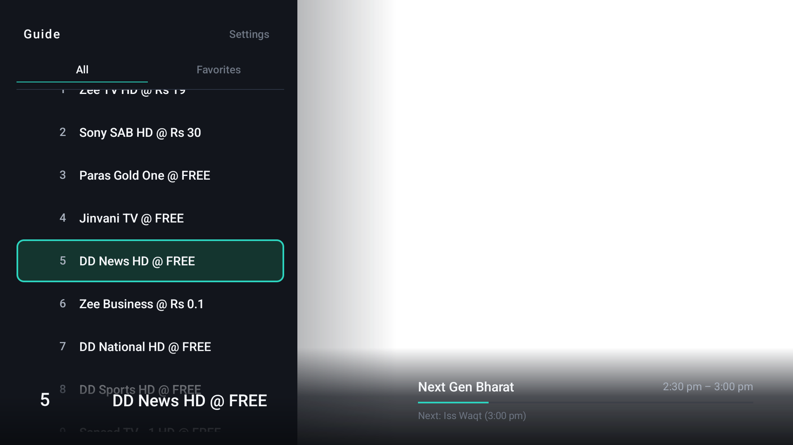
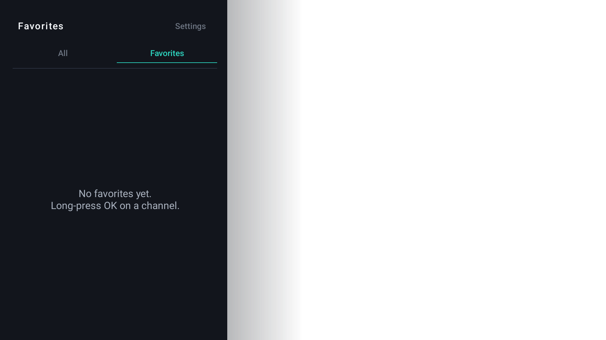
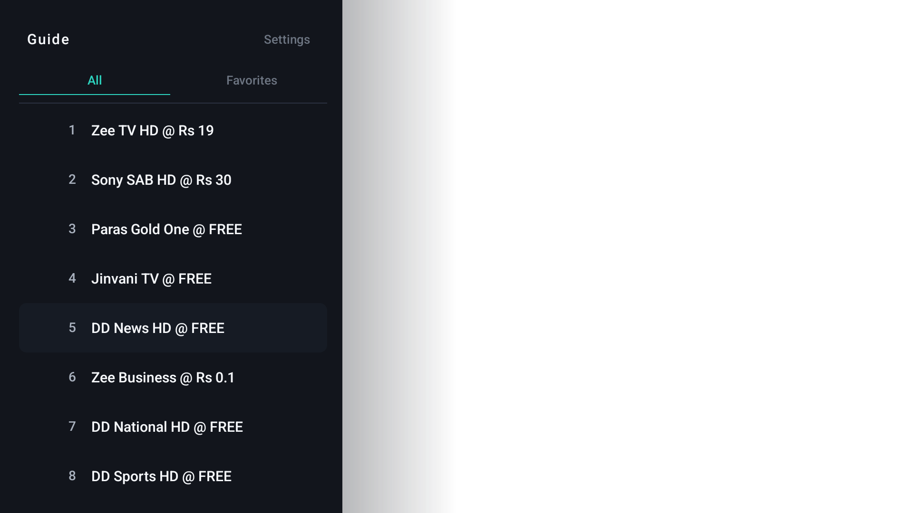
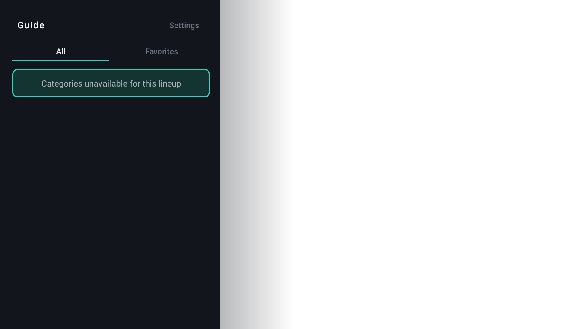

VividOrbit
Living room television, completely uncompromised.
VividOrbit is a lightweight, 100% offline live-TV and channel lineup manager engineered for Android TV and Google TV. Renumber your physical channels 1..N with atomic swaps and control your guide seamlessly from your smartphone browser via a local QR code.
Television Interface Showcase
Captured directly from Android TV running in full 1080p. Sized comfortably for ten-foot living room navigation.




Living Room Privacy Sovereignty
Your TV viewing habits belong to you alone. VividOrbit operates with zero cloud reliance.
100% Offline Local Web Server
The companion remote server runs entirely on your local television hardware. Nothing ever crosses the internet or leaves your home network.
Zero Accounts or Sign-Ins
Turn on your TV and start watching immediately. No email registration, no phone verification, and no cloud logins.
No Telemetry or Viewing Beacons
Traditional smart TVs track every channel tune and pause event. VividOrbit has zero analytics beacons and zero ad trackers.
Low-Memory Android TV Engine
Hand-tuned for Android TV 11+ and Google TV boxes with modest CPU and RAM constraints for lag-free D-pad navigation.